표를 삽입하는 방법은 다음과 같습니다.
n 표 눈금에서 삽입하기
1. 표를 삽입할 위치를 클릭한 후 [표] 탭의 [표 만들기]를 클릭하세요.
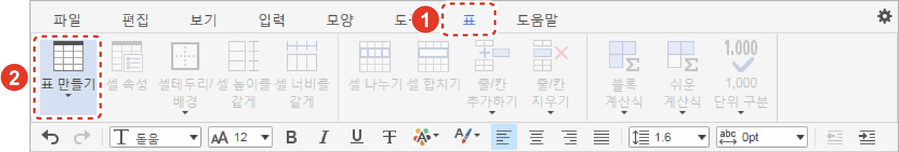
2. 마우스를 눈금 위로 이동하여 행과 열을 지정한 후 클릭하세요.
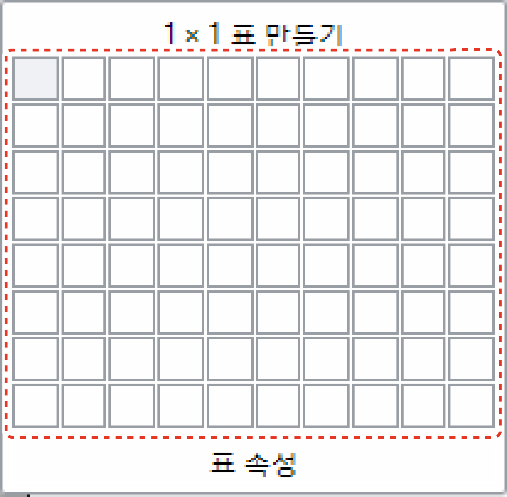
|
NOTE
|
n [표] 창에서 삽입하기
1. 표를 삽입할 위치를 클릭한 후 [표] 탭의 [표 만들기 > 표 속성]을 클릭하세요.
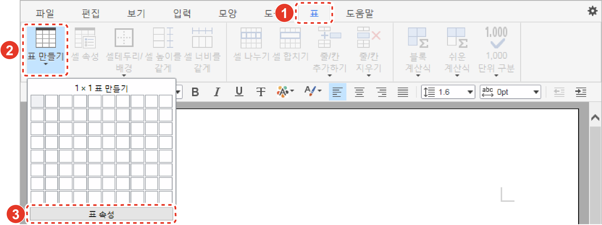
2. [표] 창에서 열과 행의 개수를 설정한 후 [확인] 버튼을 클릭하세요.
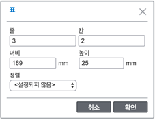
|
NOTE |
표를 삽입하면 표와 관련된 다양한 리본 메뉴가 활성화됩니다. 활성화된 리본 메뉴를 이용하여 표를 편집할 수 있습니다.
n 셀 테두리 및 배경 설정하기
셀의 테두리나 배경의 종류와 색 등을 설정하고 배경 이미지를 추가할 수 있습니다.
1. 테두리나 배경을 설정할 두 개 이상의 셀을 드래그하여 선택하세요.
2. [표] 탭의 [셀테두리/배경]을 클릭하세요.
3. 다음의 메뉴를 클릭한 후 세부 속성을 설정하세요.
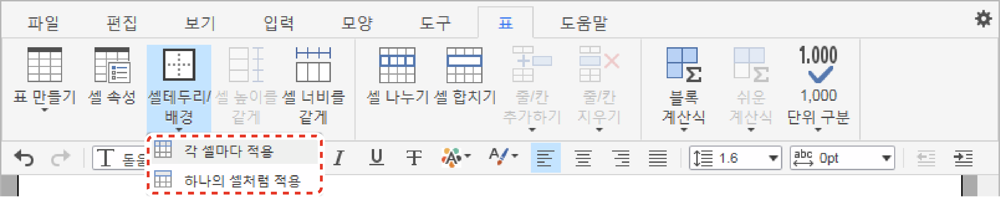
[각 셀마다 적용]: 선택한 셀별로 테두리와 배경색, 배경 이미지를 변경합니다.
[하나의 셀처럼 적용]: 선택한 셀의 전체 테두리와 배경색을 변경합니다 . 이 메뉴는 배경 이미지 설정 기능을 지원하지 않습니다.
n 셀 크기 같게 조절하기
1. 같은 크기로 조절할 두 개 이상의 셀을 드래그하여 선택하세요.
2. [표] 탭의 [셀 높이를/너비를 같게]를 클릭하세요. 선택한 셀의 너비와 높이가 동일하게 조정됩니다.
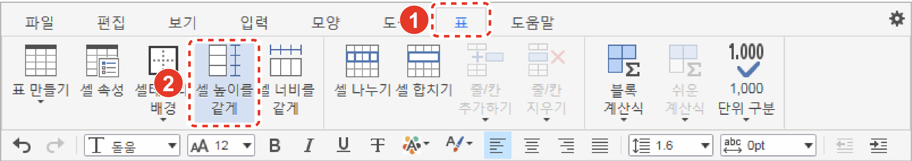
n 셀 분할하기
1. 행 또는 열로 다시 분할할 셀을 클릭하세요.
2. [표] 탭의 [셀 나누기]를 클릭하세요.
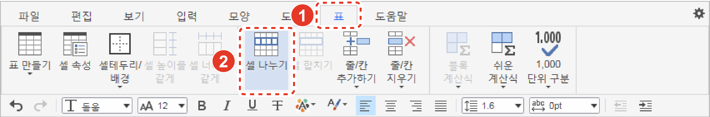
3. [셀 나누기] 창에서 새로 나눌 행 또는 열 개수를 입력한 후 [확인] 버튼을 클릭하세요. 선택한 셀이 분할됩니다.
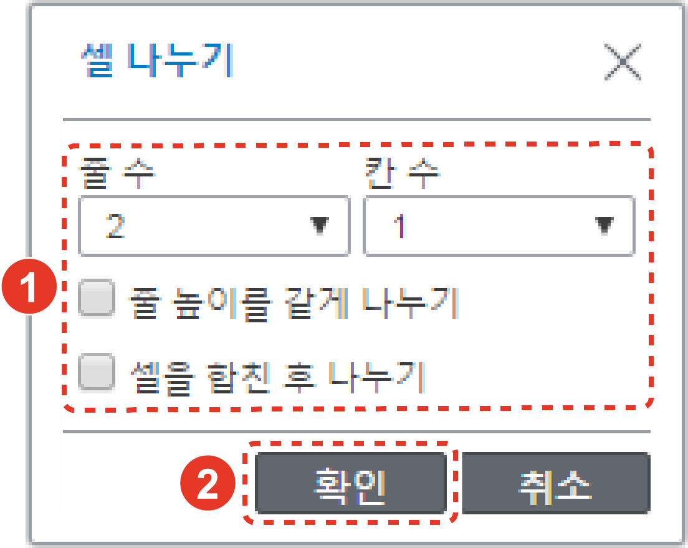
n 셀 병합하기
1. 병합할 두 개 이상의 셀을 드래그하여 선택하세요.
2. [표] 탭의 [셀 합치기]를 클릭하세요. 선택한 셀이 하나의 셀로 합쳐집니다.
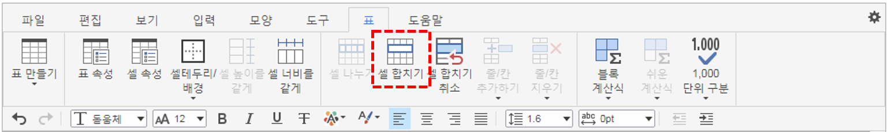
n 셀 병합 취소하기
1. 병합된 셀을 단축키(F5) 또는 드래그하여 선택하세요.
2. [표] 탭의 [셀 합치기 취소]를 클릭하세요. 병합되어 있던 셀이 합치기 전으로 돌아갑니다.
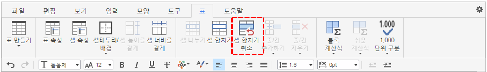
1. 행 및 열을 삽입할 위치의 셀을 클릭하세요.
2. [표] 탭의 [줄/칸 추가하기]를 클릭하세요.
3. 원하는 메뉴를 클릭하세요.
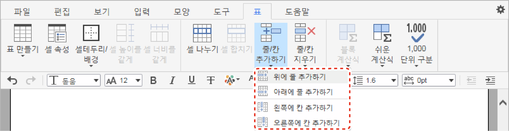
[위에/아래에 줄 추가하기]: 선택한 셀의 위 또는 아래에 행을 삽입합니다.
[왼쪽에/오른쪽에 칸 추가하기]: 선택한 셀의 왼쪽 또는 오른쪽에 열을 삽입합니다.
n 행 및 열 삭제하기
1. 행 및 열을 삭제할 위치의 셀을 클릭하세요.
2. [표] 탭의 [줄/칸 지우기]를 클릭하세요.
3. 원하는 메뉴를 클릭하세요.
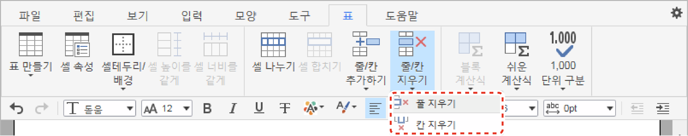
[줄 지우기]: 선택한 셀이 있는 행을 삭제합니다.
[칸 지우기]: 선택한 셀이 있는 열을 삭제합니다.
n 셀 속성 설정하기
셀의 크기와 테두리, 배경색, 텍스트 정렬 등 다양한 속성을 변경할 수 있습니다.
1. 속성을 변경할 셀을 클릭하세요.
2. [표] 탭의 [셀 속성]을 클릭하세요.
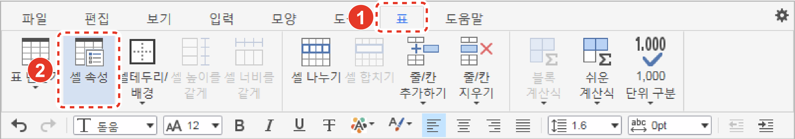
3. [셀 속성] 창에서 다음의 속성을 설정한 후 [확인] 버튼을 클릭하세요.
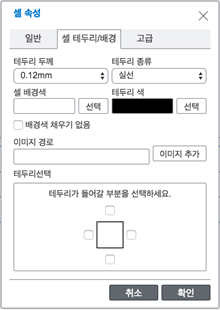
[너비/높이]: 선택한 셀의 크기를 조절합니다.
[가로/세로 정렬]: 선택한 셀 내부의 텍스트 정렬을 변경합니다.
[셀 여백]: 선택한 셀 내부의 여백을 조절합니다.
[테두리 두께]: 선택한 셀 테두리의 두께를 변경합니다.
[셀 배경색]: 선택한 셀의 배경색을 변경합니다.
[테두리 색]: 선택한 셀 테두리의 색깔을 변경합니다.
[이미지 경로]: 선택한 셀에 배경 이미지를 추가합니다.
[테두리선택]: 설정한 테두리 속성을 적용할 위치를 선택합니다.
[셀 잠금 여부]: 속성을 변경할 수 없도록 선택한 셀을 잠급니다.
[필드 이름]: 선택한 셀의 필드 이름을 지정합니다.
[양식모드에서 편집 가능]: 필드 이름이 지정된 셀을 편집할 수 있습니다.
표의 크기와 정렬, 각 셀의 간격과 내부 여백, 테두리 등 다양한 속성을 변경할 수 있습니다.
1. 속성을 변경할 표를 클릭한 후 [편집] 탭의 [고치기]를 클릭하세요. 또는 표를 우클릭한 후 [표 속성] 메뉴를 클릭하세요.
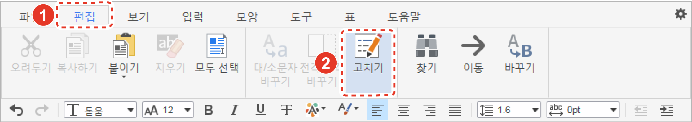
2. [표] 창에서 다음의 속성을 설정한 후 [확인] 버튼을 클릭하세요.
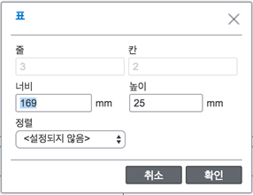
[너비/높이]: 선택한 표의 크기를 조절합니다.
[정렬]: 선택한 표의 정렬을 변경합니다.
[셀 간격]: 선택한 표의 셀 사이 간격을 설정합니다.
[모든 셀의 안 여백]: 선택한 표의 셀 내부의 여백을 설정합니다 .
[테두리] 속성: 선택한 표의 테두리 두께와 종류, 색을 변경합니다.
[표 배경색]: 선택한 표의 배경색을 변경합니다.
[배경 그림]: 선택한 표에 배경 이미지를 추가하고 배경 이미지의 채우기 유형을 설정합니다.
|
NOTE |
표에 숫자를 입력한 경우 행 또는 열의 합계나 평균, 곱을 자동으로 구할 수 있습니다 .
n 블록 계산
1. 계산할 셀을 드래그하여 선택하세요.
2. [표] 탭의 [블록 계산식]을 클릭한 후 원하는 계산 방식을 선택하세요. 선택한 블록의 다음 행이나 열에 계산 결과 값이 자동으로 입력됩니다.
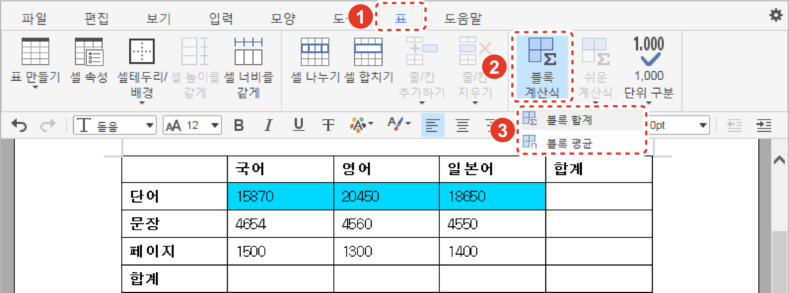
계산 결과 값을 입력하지 않고 확인만 하려면 [도구] 탭의 [블록 합계] 또는 [블록 평균]을 클릭하세요. 계산 결과 값이 팝업 창에 나타납니다.
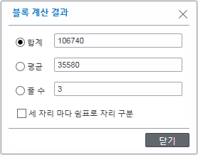
n 행 및 열 계산
1. 행 또는 열의 합계나 평균, 곱의 결과 값을 입력할 셀을 클릭하세요.
2. [표] 탭의 [쉬운 계산식]을 클릭한 후 원하는 계산 방식을 선택하세요. 선택한 셀에 계산 결과 값이 자동으로 입력됩니다.
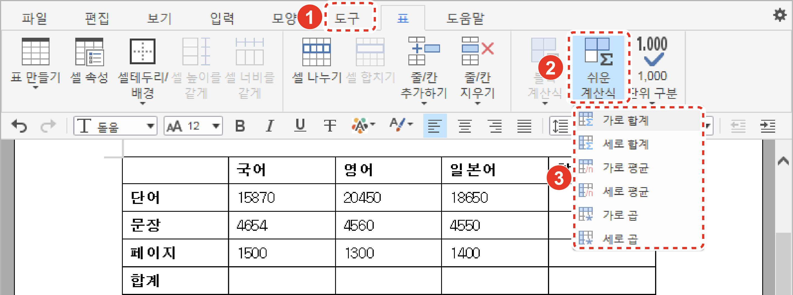
n 단위 구분 표기
입력한 수에 1000 단위의 구분 표시를 설정 또는 해제할 수 있습니다.
1. 표에서 단위 구분을 표시할 셀을 드래그하여 선택하세요.
2. [표] 탭의 [1,000 단위 구분 > 구분 쉼표 넣기]를 클릭하세요.
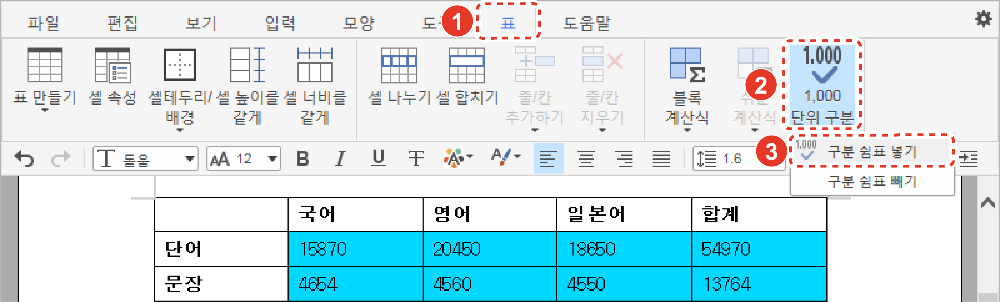
단위 구분 표시를 해제하려면 [구분 쉼표 빼기]를 클릭하세요.
삭제할 표를 우클릭한 후 [표 삭제] 메뉴를 클릭하세요. 또는 삭제할 표를 드래그하여 선택한 후 키보드의 <Backspace> 또는 <Delete> 키를 누르세요.